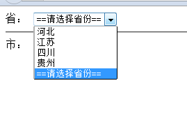

【jquery版net控件—dropdownlist】附源码，欢迎大家指点、指正、拍砖！
前言
为了2012第一个春天，为了我那卑微的工资，为了我那伟大的爱情............................
其实是为了自我能力的提升罢了，呵呵！！！（也是为了涨工资吧...）
小弟准备向web前段开炮，而对js与jq都是初学，现在借博客园这块宝地来督促自己，借博客园的高手来提点自己。
小弟准备陆陆续续用jquery模仿一点.net的控件以提高自己，顺便看看能不能弄一点可用插件出来，各位大哥看到了多多指点哦。
控件简单应用
效果图
1 初始化效果
生成的html代码
2 控件选项改变事件以及列表项点击事件（最后三项后期加入未作事件绑定）
3 前台调用代码
<!DOCTYPE html PUBLIC "-//W3C//DTD XHTML 1.0 Transitional//EN" "http://www.w3.org/TR/xhtml1/DTD/xhtml1-transitional.dtd">
<html xmlns="http://www.w3.org/1999/xhtml">
<head>
<title></title>
<script src="scripts/jquery-1.4.1.js" type="text/javascript"></script>
<script src="js/dropDownList.js" type="text/javascript"></script>
<script type="text/javascript">
$(document).ready(function () {
var data = [];
for (var i = 0; i < 3; i++) {
data[i] = {};
data[i]["v"] = "value_" + i.toString();
data[i]["t"] = "text_" + i.toString();
}
var $div = $("#divwl");
var drop1 = new dropDownList("drop1");
drop1.event.onChange = onSelectChanged;
drop1.itemEvent.onClick = onItemClick;
drop1.dataSource = data;
drop1.dataValueField = "v";
drop1.dataTextField = "t";
drop1.dataTitleField = "v";
drop1.dataBind($div);
drop1.setSelectedText("text_2");
//动态添加选择项，此处选择项没有事件
for (var i = 0; i < 3; i++) {
var v = "inertValue_" + i;
var t = "insertText_" + i;
var _item = new item(v, t);
_item.load();
drop1.insertItem(_item);
}
drop1.style.width = '300px';
drop1.style.height = '25px';
drop1.style.background = 'Gray';
drop1.styleLoad();
//事件处理函数
function onItemClick() {
var sender = this;
var optionSender = sender.htmlElement;
var selectedValue = optionSender.val();
var item = sender;
var $div = $("#itemText");
$div.html("单项点击事件<hr/>" + "当前项：" + item.attribute.text + "<br/>当前值：" + selectedValue);
$div.fadeIn(500);
$div.fadeOut(5000);
}
function onSelectChanged() {
var sender = this;
var dropSender = sender.htmlElement;
var selectedValue = dropSender.val()
var item = sender.getSelectedItem();
var $div = $("#text");
$div.html("dropdownlist的改变事件<hr/>" + "当前项：" + item.attribute.text + "<br/>当前值：" + selectedValue);
$div.fadeIn(500);
$div.fadeOut(5000);
}
function onSelectClick() {
var sender = this;
var dropSender = sender.htmlElement;
var selectedValue = dropSender.val()
var $div = $("#text");
$div.html("dropdownlist的点击事件，当前值：" + selectedValue);
$div.fadeIn(500);
$div.fadeOut(5000);
}
});
</script>
</head>
<body>
<div id="divwl">
</div>
<div id="text">
</div>
<div id="itemText">
</div>
</body>
</html>
1 数据源
数据源为我们动态写入的数组。
var data = [];
for (var i = 0; i < 3; i++) {
data[i] = {};
data[i]["v"] = "value_" + i.toString();
data[i]["t"] = "text_" + i.toString();
}
var $div = $("#divwl");
var drop1 = new dropDownList("drop1");
2 基本调用说明
1 drop1.event.onChange = onSelectChanged;
2 drop1.itemEvent.onClick = onItemClick;
3 drop1.dataSource = data;
4 drop1.dataValueField = "v";
5 drop1.dataTextField = "t";
6 drop1.dataTitleField = "v";
7 drop1.dataBind($div);
8
9 drop1.setSelectedText("text_2");
与.net控件基本一致，给定数据源，但是我这里多出了一个dataTitleField用以显示提示框。
其中，drop1.event.onChange = onSelectChanged;为select 的事件
drop1.itemEvent.onClick = onItemClick; 为option的事件绑定
注意，此处事件绑定采用的是call的用法，所以下方函数：中的this作用域环境要注意。
3 动态添加列表项
1 //动态添加选择项，此处选择项没有事件
2 for (var i = 0; i < 3; i++) {
3 var v = "inertValue_" + i;
4 var t = "insertText_" + i;
5 var _item = new item(v, t);
6 _item.load();
7 drop1.insertItem(_item);
8 }
此处添加的项，便没有做事件绑定了。
再下面的代码便是对应函数便不多说了。
控件数据源Ajax获取应用
1 效果图
基本界面

Ajax获得json数据源：
[{"id":1,"name":"河北"},{"id":2,"name":"江苏"},{"id":3,"name":"四川"},{"id":4,"name":"贵州"}]
对应数据库数据：
点击对应省份引发改变事件
获取数据源：
[{"id":8,"provinceId":3,"name":"成都"},{"id":9,"provinceId":3,"name":"绵阳"},{"id":10,"provinceId":3,"name":"遂宁"},{"id":11,"provinceId":3,"name":"南充"}]
前台调用代码：
<!DOCTYPE html PUBLIC "-//W3C//DTD XHTML 1.0 Transitional//EN" "http://www.w3.org/TR/xhtml1/DTD/xhtml1-transitional.dtd">
<html xmlns="http://www.w3.org/1999/xhtml">
<head>
<title></title>
<script src="scripts/jquery-1.4.1.js" type="text/javascript"></script>
<script src="js/dropDownList.js" type="text/javascript"></script>
<script type="text/javascript">
$(document).ready(function () {
var dataProvince = null;
$.ajax({
type: "post",
url: "Ajax.aspx?sql=select * from province ",
type: "json",
async: false,
success: function (data) {
dataProvince = data;
}
});
var $div = $("#province");
var drop1 = new dropDownList("dropProvince");
drop1.event.onChange = onSelectChanged;
drop1.dataSource = dataProvince;
drop1.dataValueField = "id";
drop1.dataTextField = "name";
drop1.dataTitleField = "name";
drop1.dataBind($div);
var _item = new item("-1", "==请选择省份==");
drop1.insertItem(_item);
drop1.setSelectedText("==请选择省份==");
function onSelectChanged() {
var sender = this;
// var provinceId = sender.getSelectedValue();//也可以
var provinceId = drop1.getSelectedValue();
var dataProvince = null;
$.ajax({
type: "post",
url: "Ajax.aspx?sql=select * from city where provinceId=" + provinceId + " ",
type: "json",
async: false,
success: function (data) {
dataProvince = data;
}
});
var $div1 = $("#city");
var dropCity = new dropDownList("dropCity");
$div1.html("市：");
dropCity.dataSource = dataProvince;
dropCity.dataValueField = "id";
dropCity.dataTextField = "name";
dropCity.dataTitleField = "name";
dropCity.dataBind($div1);
}
});
</script>
</head>
<body>
<div id="province">
省：
</div>
<hr />
<div id="city">
市：
</div>
</body>
</html>
这个我便暂时不说明了吧，很晚了，明天还要上班呢......
因为不知道看的人多不多，也不知道大家有没有问他，若是有问题我再解答吧，具体请大家自己去运行吧。
dropdownlist源代码